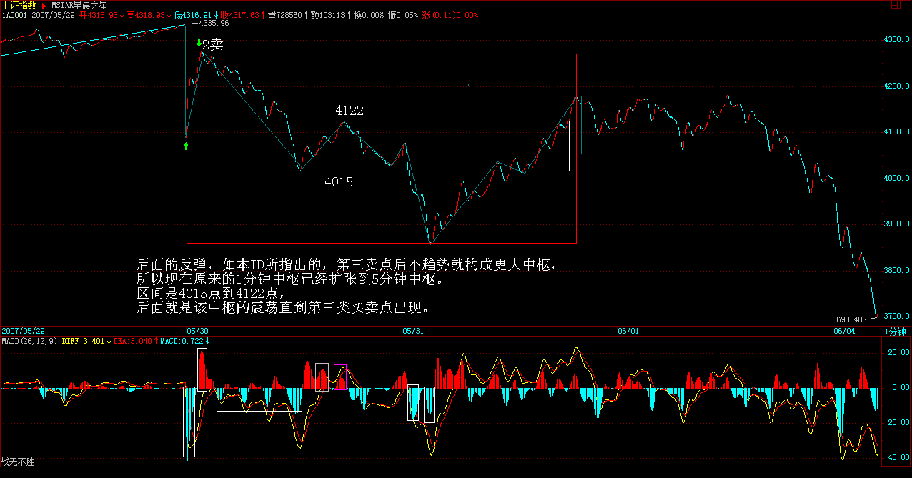

|
 |
教你炒股票56：530印花税当日行情图解
(2007-05-30 22:49:10)
从容面对突发事件是投资的基本素质
本ID虽然在大牛市的序幕，还未真正拉开说过，“5月，是1429点以来的180个月，360的一半，一个极为重要的时间之窗，其后，不发生点事情，显然是不可能的”；虽然前天已说过：“在某一级以上的，今天应该已经收到一些东西，具体的本ID不能说，内容当然也是和调控股市有关的，估计这几天就会出来了”，昨天更劝告“如果你在股票中已经获得利益，那首先去改善自己的生活条件，去孝敬那些值得孝敬的人，...赚钱不花，当守财奴，脑子有水呀？先把自己以及家人的生活安置好，把本金拿出去，用股市挣的钱继续股市的游戏”，但本ID绝对不会说关于早已传闻的印花税增加在今天凌晨公布的准确时间，本ID已事先知道。
显然，这事情公布的最终确认就在昨晚，所以各位也没必要拿23日管理层的澄清说事，更不能说管理层朝令夕改，毕竟30日和23日已经相隔一周了。这种凌晨才发布的消息，在中国证券历史上也算开先河了。这里，首先必须表扬管理部门目前的操作程序与保密级别上比以前有了很大的进步，这对市场的所有参与者更加公平；其次，这政策本身也符合目前管理部门的认识水平；最后，收到的钱应该多照顾几个该照顾的人，这也算是大牛市对全中国贫苦人的一点贡献。所以，对该政策，本ID没什么意见，该来的都要来的。至于政策市这样的帽子，本ID觉得没必要给他们戴上，毕竟，提高税收，并不是中国才有的事情，这比那什么指引要强10000倍，那才是本ID最反感的。
好，现在回到具体的操作上。首先必须再次明确，要改变大牛市性质的只有经济的倒退，否则都不过是造成市场不同级别震荡的诱因，一个正确的操作，足以应付。其次，面对突发事件，仓位、成本控制比较重要，这也是本ID为什么反复强调股票是废纸，必须成本为0的原因，因为突发事件，本来就是市场中不可避免的，一个良好的操作习惯，足以应付任何突发事件，一个成本为0的筹码，是应付突发事件最好的工具。
在投资市场上，必须大气点，无论这次震荡的级别有多大，你走了没走，都不过是一个小事情，走了不是胜利，没走也不是末日，关键的是你正确的操作习惯与长期的坚持。1996年12月，连续的跌停后，市场最终5个月后依然重新创出新高。1987年的美国股市大跌，在现在看来，只不过是在山脚上的一次小颠簸。从容面对突发事件，这才是投资的基本素质。
技术上，这几天反复强调的月线收盘将引发多空相争的惨烈，当然也包括政策面这市场合力之一。相应的分析依然有效，如果月线留下长上阴，则6月份调整压力就大了，显然，管理层也知道这技术上的意义，在这最关键的最后两天出手。这里，必须表扬一下管理层，不像以前一样一点技术都不懂了。站在大的技术层面，本来那关键的1/2线就需要更多的考验，该线将至少影响3个月走势的结论依然有效，而那三种模式的选择，现在依然没有最后确认。这里无须预测什么，看图操作就可以。
附录三种模式：
一、在该线(2*1线4129）前止步或在该线上形成多头陷阱进而形成一个大级别顶部；
二、突破该线并围绕该线进行强势的、如1-3月在突破1/4线后进行的类似盘整，然后寻机突破。（此类成现实）
三、强力突破并远离该线后，以一个强势的回调来确认对该线的突破，然后再展开对3/4线的攻击，目前该线的位置在1429+270X15=5479点。
本ID知道，昨天有人看了本ID的帖子阴错阳差就清了仓的，有些把本金拿走了，这都很好，虽然这里有点阴错阳差，但也算孝顺者得好报，这和本ID无关。至于仓位依然比较重，如果一直从低位守着均线等上来的，有足够多的利润空间，特别成本已经是0的，就更无所谓了，只要按正常的操作，无论什么情况，就算没在第一卖点走，也可以在第二、三卖点走，这没什么难的。至于最近追高买股票的，那就得一个教训，然后才能刻骨铭心地记住本ID的话：股票都是废纸，必须选好级别买点买、卖点卖，把成本降为0，只有成本为0的股票才是真正安全的。
由于以后的交易成本大幅度提高，因此相应的操作级别必须大幅度提高，最低的操作级别至少是5分钟甚至30分钟以上，至于按买点买、卖点卖的原则永远不变。有了相应级别的买点，就要重新介入，这一点是没什么可说的。短线技术上，30分钟上本来就形成的顶背驰段的区间套确认极可能因为这突发事件而被粗暴地确认，以此为起点，参照其后相应的当下走势，去逐步确认今后的买卖点进行相应的操作。
至于本ID的仓位，可以很公开地说，除了永远保持的协调应急保证金，目前大概是70%仓位成本为0的老股票，还有5%是新建仓的新股，其余25%都是现金。这两天本ID的减磅也有点阴错阳差，但都不是为了这印花税，小部分是技术上的原因，大部分是为了那可恶的指引，当然还有一点是为了本来知道也和各位暗示过的一些消息，当然，那些消息的力度与印花税的这个不可比较。本ID的观点依然如故：除非那可恶的指引被实施，否则本ID不会走人，至于减磅这种活动，只要有卖点，本ID都会参加的，只是数量多少的问题，但本ID会在适当的买点重新买入。
最后，把昨天的话重申并延伸一下，这也是本ID的一贯态度：但无论如何，中国大牛市的格局是不会因此改变的，震荡级别越大，不过提供降低成增加筹码的机会越大。至于本ID一直设计的剧本，依然没有任何放弃和修改的理由，因为3之3已经走出来，这一段已经比上一段的1500点要长了，符合最严格的理论条件，至于能否走得更长，那并不重要。更重要的是，这个剧本已经给在2000多点开始的参与者带来巨大的回报，这个回报已经锁定，成本已经为0，谁都抢不走，而这，又是展开新一轮行情的能量储备，该来的，必将要来，现在需要的，只是等待买点的出现。
教你炒股票56：530印花税当日行情图解
(2007-05-30 22:49:10)
本来不想说股票的，但知道现在说其他，大多数人也反应迟钝，被股票所迷惑了，所以还不如将错就错，就继续股票一把，说说昨天这530印花税当日行情如何去当下地分析。
本来这个问题十分简单，而且本ID一大早7点不到就发帖子提醒要在第二、三卖点把仓位减掉，很高兴看到不少人都能发现9点48那第二类卖点。注意，为什么同时强调第三类卖点，因为有些特别弱的股票，可能就是一个第三类卖点，大盘的走势是一个平均走势，而且当天比很多个股都强，所以大盘是第二类卖点，并不意味着个股是第二类卖点。
很多人大概到现在都不明白为什么本ID的理论中要有三类卖点，其实，第二类卖点除了在小级别转大级别上比第一类卖点优越，在一些特殊的突发情况下，就是最佳的卖点。例如这次，就是一个很好的例子。因为529那天，虽然30分钟明显进入背驰段，但由于当天尾盘是高收的，所以用区间套定理并不能确认当时就是背驰了，毕竟还有第二天的走势。而晚上的突发消息，使得这个背驰被立刻确认，这时候，第一类卖点已经不可能在实际操作中存在，那么，唯一可以进行操作的，只能是第二或第三类卖点。这，在开盘前就可以有一个确定，也就是说，一旦大幅度低开，现实的、能被理论完全保证的卖点就是第二类或第三类卖点。
上图就是昨天走势的1分钟图。缺口，被看成最低级别的，而1分钟以下级别，在1分钟图上，被看成没有内部结构的线段，所以缺口和1分钟以下级别在1分钟图上是同级别的。图上绿尖头都指着两个1分钟以下级别的分界点，两相邻绿箭头之间都是1分钟以下级别的走势类型。其中B段，看似要形成3个1分钟的中枢，但由于每一个的第三段其实都是向下倾斜下去的，其实都是第二段向下的一部分，不能算是形成中枢。昨天走势其实就这么简单，就是5个1分钟以下走势类型的组合。
显然，这第一段的1分钟以下级别走势类型是以向下缺口的形成构成的，根据第二类卖点的定义，就知道，一旦一个1分钟以下级别的向上过程不能创新高或背驰，都将构成第二类卖点。因此，当图中A段走势出现时，一个构成第二类卖点的走势就当下地形成中。
有人可能有疑问，那怎么知道这A段一定构成第二类卖点而不是直接创新高强烈上升，这很简单，具体的方法和区间套定理是一样的，就是看A段的内部结构，一旦内部出现背驰而当时位置没创新高或与前面走势产生盘整顶背驰，那么就一定是第二类卖点。在昨天的具体走势中，A段在内部出现上下上的内部结构时，其中的第二段向上明显出现背驰走势，这可以成交量，或从第一个红箭头所指的MACD绿柱子与后面红柱子绝对值大小比较辅助判断。因此，这个第二类卖点，可以用理论完全明确地确认，一点含糊的地方都不会有。如果当时当下不能明白，那就要抓紧学习了，因为这个问题确实太简单了。
第二类卖点后，从第二绿箭头开始的B段走势，其力度就要和缺口那一段来对比，比较MACD上两个红箭头指的绿柱子面积，注意，第二个要把前面的三个小绿柱子面积也加上，可以看出，即使这个，后者的力度也不大过前者，由此就知道，B段构成了盘整背驰，也就是后面的反弹一定回到第一个绿箭头位置之上。（注意，这里是1分钟以下级别的力度对比，只需要比较柱子面积，如果是1分钟级别的，就要同时考虑黄白线回抽0轴的情况。）
而后面C段的走势也证明了这一点。此外，C段的高点，用C段下方对应的MACD柱子高度对比不难用背驰的方法判断。由此，ABC三段就有了重叠，因此就构成了一个1分钟的中枢，区间在4087到4122点。这就成了直到后面、包括明天走势的最关键地方，究竟是中枢震荡，还是形成第三类买卖点，进而构成更大中枢或趋势，都以此为基准。而这是被理论所当下严格保证，毫无可以含糊的地方。
有些更细致的地方，其实还可以说的。例如，C段的高点，没有重回B段内部最后一个反弹的启始位置，这并不违反理论，因为在B段内部，最后一段向下并没有背驰，他的转折，完全是小级别转大级别造成的（由于级别太小，可以从柱子的缩短参考看出），这自然就不一定能回到最后一个反弹的启始位置。而在B段内部，从绿柱子一个比一个面积大，就知道前面的向下都不会形成背驰而使B段结束，因此就可以当下地等待最后跌破A段低点，形成B段与缺口段的盘整背驰。
这个例子说明，一个大的盘整背驰段的内部结构，完全可以不必有该级别的背驰，完全可以小级别转大级别，昨天的图上就有这样一个标准的例子。
实际操作中，第二类卖点后，B段盘整背驰造成的买点是否要参与回补，这和你的操作级别有关，如果是股指期货，这对应的是100点的空间，当然是可以参与的，但由于T+0，而且现在交易成本提高了，对于股票是否参与，这就与你实际操作的股票有关了，这必须根据自己的情况灵活处理。但只要你明白了小级别的情况，大级别的操作是一样的，而且大级别的安全性、可操作性更高，操作的频率也更低而已。本ID说这里的例子，只是让大家对理论能更清楚地了解。
每日解盘（2007-05-30 15:38:29 ） 缠中说禅 2007-05-30
15:38:29
从今天的走势，就知道为什么本ID的理论里要分第一、二、三买卖点。例如像今天这种突然的事情，可能让第一卖点给错过了，但第二卖点是不会错过的。因此早上本ID专门提醒第二、三卖点走，实际图形上，如果你认不出05300947这个第二类卖点，或者知道没操作，那么学习就比较失败了，还要努力。本ID的理论是实战的，在第二类卖点走，即使不知道什么消息，和高位比也差不了多少，有些股票今天还新高，可以对照不同股票的图形感受一下第二类卖点在这种突发事件中的实用之处。
对一个操作者来说，不要这么多抱怨，第二类卖点不走，那就是节奏错误，那后面就没有资金等待买点，不过，市场的机会多了，经历一次这样的，也会得点经验。
这30分钟的顶背驰压力，怎么都需要一个至少1分钟的底背驰才能有比较有力度的反弹，而且还要参考5分钟、30分钟等的走势。真正的底部构筑，必须让这些级别的图形重新走出买点来。
长线看，本ID说那1/2线，还是对大盘有着极大的吸引，深圳对应的线在13700点，没有突破，因此，上海对该线的走势就更有指导性。5月份这180月时间之窗的压力，同样构成了今后行情发展的最主要技术压力。目前的调整是针对2月6日2541点上来1800点上涨的，这是必须明确的。
从中枢的角度，一个30分钟顶背驰，按理论的要求，重新拉回5月8日到5月21日构成的30分钟中枢，因此，可以继续参照该中枢来考察今后的中枢，可以中枢震荡的观点进行。
对于短线有能力的，可以参照短线指标回补第二卖点卖掉的股票，然后进行中枢震荡操作。本ID的所有观点，没有任何变化，就不多说了
缠中说禅：
2007-05-30
22:54:41 [举报]
补充一句，图片看不到的，请到本ID的相册里，第四张就是。
附录：
明白了上面的文章，今天的走势如果都不能把握，那就要继续加班学习了。昨天4087-4122的中枢，今天一大早的上冲没有触及4087点，所以就构成了该中枢的第三类卖点。后面三波的下跌，与昨天的B段比，明显背驰，其内部，最后一波，在1分钟图上，绿柱子明显缩短，所以内部也背驰，根据区间套就可以当下定位10点02分低点。这是本ID理论中最简单的技术的，如果今天没能这样的分析的，请好好研究补习。
后面的反弹，如本ID所指出的，第三卖点后不趋势就构成更大中枢，所以现在原来的1分钟中枢已经扩张到5分钟中枢。区间是4015点到4122点，后面就是该中枢的震荡直到第三类买卖点出现。就这么简单，一点难度都没有。

大方面看，本ID反复强调的1/2线，依然是最重要的位置，大盘的强弱，以此为标准。目前，该线刚好在这次大震荡的中间位置上，由此就知道该线的意义有多大。在5月初的文章里已经明确说过，该线至少要管大盘3个月，这观点不变。
今天的月线收盘，已经足够好了，至少上影线不太长，比最恶劣的倒T要好多了，因此下月，至少有了很大的画图回旋的余地。注意，最近的行情，又将以质优的一、二成分股为主，三线股一定要等到大盘基本稳定下来，才会慢慢恢复元气。但明天和周一，今天反弹比较弱的，会逐步表现，这和轮动是一个道理。
明天是周五，消息面又成了最大的心理压力，整个市场震荡要稳定下来，要等到下周了。当然，这种大幅震荡，就是本ID理论的天堂，在这里可以得到比单边更大的利润。注意，别以为本ID的理论只会震荡，而是该震荡的时候震荡，该单边的时候单边，这都不明白，就白学了。
缠中说禅：
2007-05-31
15:58:38 [举报]
[匿名] 美女 “后面三波的下跌，与昨天的B段比，明显背驰” 这个怎么看出来的啊？ 我用1F图分析MACD绿柱子块没有减小啊， 背驰判断还有什么诀窍？ 缠中说禅：
2007-05-31
16:00:35 [举报]
[匿名] 竹子 2007-05-31 15:56:56 这些股票两个跌停也就别人的一个，大多数都回来20%以上了，他们如果才回10%，当然没有反弹动力，这是一个常识问题。等有反弹空间，自然就反弹。
缠中说禅：
2007-05-31
16:14:00 [举报]
[匿名] asd 如何判断，你看图就知道，一高一矮，这有什么可说的。1分钟以下级别，是把下面所有级别当成线段，是没内部结构的，当然，你换了一种标准，下面可能还有无数级别。至于每个图，等于用不同度数的显微镜，关键是每张图上的标准是统一的。这标准的底线就是，先确认一个最低级别的，然后把下面的都看成线段。这问题课程里反复说过了。例如，把两张不同的图并在一起，可能看的标准就有改变，例如，可能就用5分钟的标准看，那么需要忽略的东西就不同了，这道理很简单。如果还想不明白，那就用肉眼来比喻，像看一本书，我们的级别最多就到字，但实际字里面还有无数级别，一直到电子下面还有，那这个字里的下级别，与一个电子，在肉眼看来，都是字以下级别的，根本就没区别，都看不到。 缠中说禅：
2007-05-31
16:17:53 [举报]
[匿名] hunter 先把中枢的三段搞清楚，提示一下，昨天的C段是这种分解的新中枢的第一段。
当然，可以按照另一种分解去定中枢的位置，那么谈论就要按那种分解说了，这样，本ID的讲解就太长了。关于这问题，本ID不是已经专门示范过？请参考课程。(娇注：指定位ABC中枢，后面为中枢震荡，比较力度）
缠中说禅：
2007-05-31
16:22:13 [举报]
[匿名] 果 操作不是这样的，最正确的，就是昨天第三卖点清仓，然后回头打一、二线股，这叫节奏。现在那些股票都涨起来，你杀三线去买一线，那就左右挨嘴巴。操作，说白了就是一个节奏问题，如果节奏不对，宁愿原地踏步，把节奏调过来。
=========== 缠中说禅：
2007-05-31
16:32:58 [举报]
[匿名] 大盘 2007-05-31
16:43:34 [举报]
[匿名] 小明 本ID什么时候说过这股票？本ID说的那股票现在关起来了，这里的人都应该很清楚。另外说一句，那什么等比，本ID当天早上专门上来说不要买小盘的，那会把盘面搞乱，那天刚好是关起来那只的最后一天，那天买关起来的，现在能有什么事？小盘那只，后面还创过一次新高，这么明显的背驰，如果当时买了，为什么不走？小盘那股票，中线当然没问题，但如果一大堆人抢了，那就有问题了。那时候，铜矿装不装就两说了。这股票其实就这么简单，如果铜矿如期装，那就一飞冲天，如果乱抢，那就趴着，等都熬不住再说。注意，那可是3000来万的盘子，装不了许多人，这就知道为什么本ID那天专门上来警告不要乱买小盘的。记得600777在1月时候为什么想死了一样，就是因为有4拨人，这当时本ID也说过的，为什么416猛，就是因为干净，就这么简单，没什么可说的。
|
|
|
|